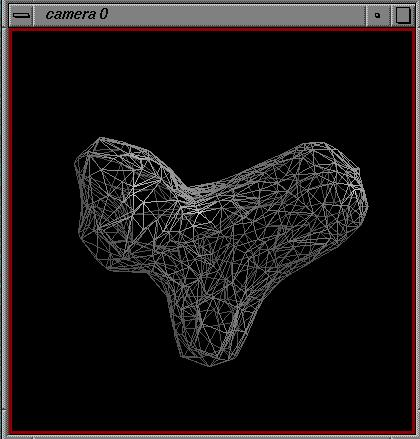
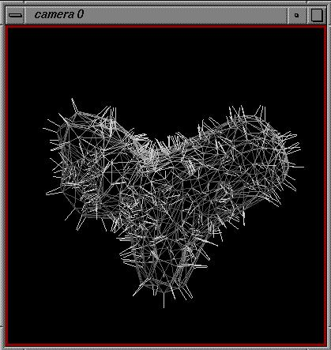
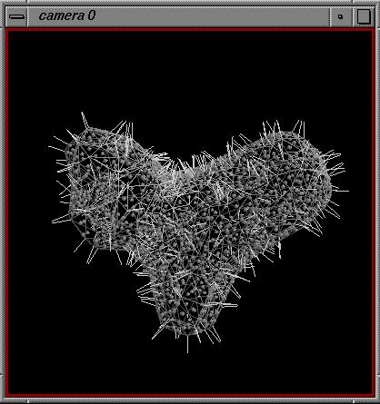
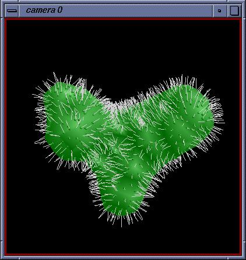

>>> from tutorialFunctions import readSurface
The function readSurface returns v, a list of vertices and t a list
of triangles
>>> v,t = readSurface ('surface')
We make a numeric array out of the vertices so we can easily separate vertices and normals
>>> import Numeric
>>> vn = Numeric.array(v)
We get a viewer:
>>> from DejaVu import Viewer
>>> vi = Viewer()
We add the surface to the viewer
>>> from DejaVu.IndexedPolygons import IndexedPolygons
>>> srf = IndexedPolygons('myFirstSurface', vertices = vn[:,:3],
vnormals=vn[:,3:6], faces = t)
>>> vi.AddObject(srf)
To see the new object, we have to redraw the scene:
>>> vi.Redraw()

The surface composed of triangles should appear in camera 0.
The buttons at the bottom of the Viewer GUI let you change this display.
First make "~myFirstSurface" the current object. Then, click on the
Front button. A drop-down menu appears with 4 radiobuttons: inherit,
point, line or fill. Try changing the surface to Fill. While
it is shown in this representation, experiment with the Shading menu.
The Culling menu allows you to select which side of the surface is hidden
(culled). Try rotating the object while the front is culled.
Notice that if Front_and_Back is culled the object disappears!
To see the effects of selecting "INHERIT" for the Front representation,
make "root" the current object and change its representation from line
to fill or to point.
Notice what the surface looks like if Culling is set to None: If the
Front and Back representations are both set to Line you see all the triangles
in both the front and back. If you now change the Back representation
to Fill, you will see the Front triangles on top of the Back shaded areas.
Experiment with changing culling.
To make this example a little more interesting, we will add lines to represent the normals to each vertex , spheres to mark the center of each face and lines representing the normal to the center of each face:
To add the normals to each vertex (each point in pts which is a copy
of vn):
>>> from DejaVu.Polylines import Polylines
>>> pts = vn.__copy__()
>>> vn[:,3:6] = vn[:,:3]+vn[:,3:6]
>>> pts = Numeric.reshape( vn, (-1,2,3) )
>>> p = Polylines('normals', vertices = pts)
>>> vi.AddObject(p)
To see the new object, we have to redraw the scene:
>>> vi.Redraw()

To add the face centers (by computing the center of gravity of each
triangle):
>>> from DejaVu.Spheres import Spheres
>>> pts = Numeric.take(vn[:,:3], t)
>>> cg = Numeric.sum(pts, 1)/3.0
>>> s = Spheres('faceCenters', centers=cg, radii=0.1 )
>>> vi.AddObject(s)
To see the new object, we have to redraw the scene:
>>> vi.Redraw()

To add the normals to the triangles placed on the face centers we just
computed:
This is done by calculating the normals to the triangles:
>>> from OpenGL import GL
>>> vc = vn[:,:3].__copy__()
>>> nf = GL.glTriangleNormals(vc, t, 'PER_FACE' )
Then by drawing lines from the center of the triangles to these points:
>>> pts = Numeric.concatenate( (cg, cg+nf), 1 )
>>> pts = Numeric.reshape(pts, (-1,2,3))
>>> pf = Polylines('faceNormals', vertices = pts)
>>> vi.AddObject(pf)
To see the new object, we have to redraw the scene:
>>> vi.Redraw()
'normals' and 'faceNormals' have been show in the viewer as a collection of lines. 'faceCenters' has been added to the viewer and appears as a collection of spheres marking the centers of the triangles making up the surface. (NB:You may need to do a "Reset" if you transformed the surface in the viewer before these additions.) As discussed above, transformations are directed to the current object so that it is possible to transform 'normals', 'faceNormals', or 'faceCenters' independently of 'myFirstSurface.' If 'root' is the current object, everything in the viewer is transformed together.
